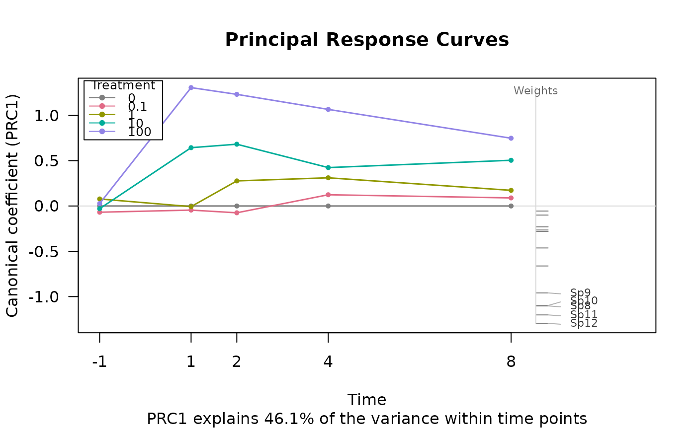

The PRC diagram: each treatment's canonical coefficients over time, with the control's as the flat line at 0, and the features' weights as ticks on a scale at the right, labelled for those with the largest weights. A feature's weight times a treatment's coefficient approximates the change in its (normalized) abundance relative to the control.
Usage
# S3 method for class 'ecodive_prc'
plot(x, axis = 1L, species = 10L, legend = "topleft", col = NULL, ...)Arguments
- x
A result of
principal_response_curves().- axis
Which curve (axis) to draw. Default:
1.- species
How many features' weights to label: the ones with the largest absolute weights. Every feature's weight is drawn as a tick unless
species = FALSE.TRUElabels them all. Default:10.- legend
Where to put the legend: a position keyword for
graphics::legend(), orNULLfor none. Default:'topleft'.- col
The treatments' colours, in the order of their levels, the control's included. Default:
NULL, grey for the control and a palette for the others.- ...
Passed to
graphics::plot.default(), such asmain,xlab,ylab,sub,lwdorlty.
Details
Time points are placed at their values when every level of time is a
number, and evenly otherwise. The title is "Principal Response Curves";
the subtitle gives the axis's share of the variance within time points
and, when the tests were run, the first axis's p-value.
Examples
set.seed(1)
meta <- expand.grid(plot = 1:10, time = c(-1, 1, 2, 4, 8))
meta$dose <- rep(c(0, 0.1, 1, 10, 100), 2)[meta$plot]
effect <- outer(log1p(meta$dose) * (meta$time > 0) / (1 + meta$time / 4), 1:12)
counts <- matrix(rpois(50 * 12, exp(2 + 0.05 * outer(meta$time, 1:12 - 6) - 0.05 * effect)), 50)
colnames(counts) <- paste0('Sp', 1:12)
prc <- principal_response_curves(log1p(counts), meta$dose, meta$time, permutations = 0)
plot(prc, species = 5)
